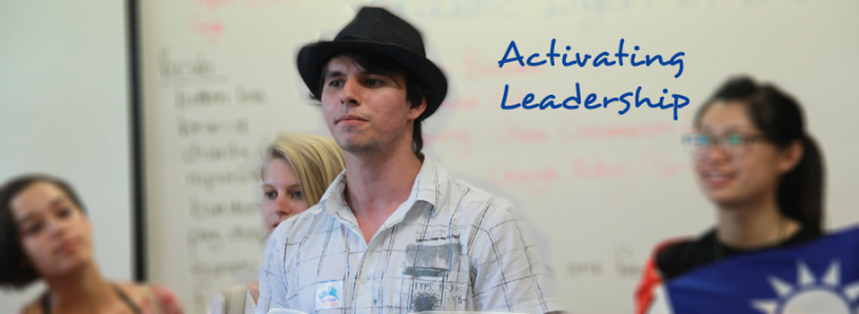
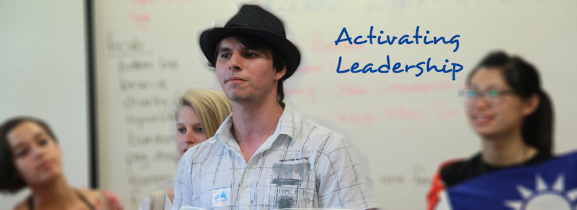
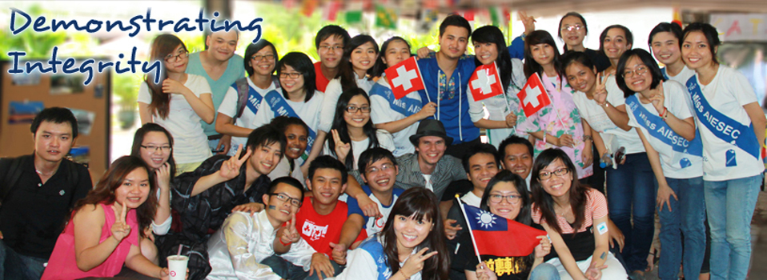
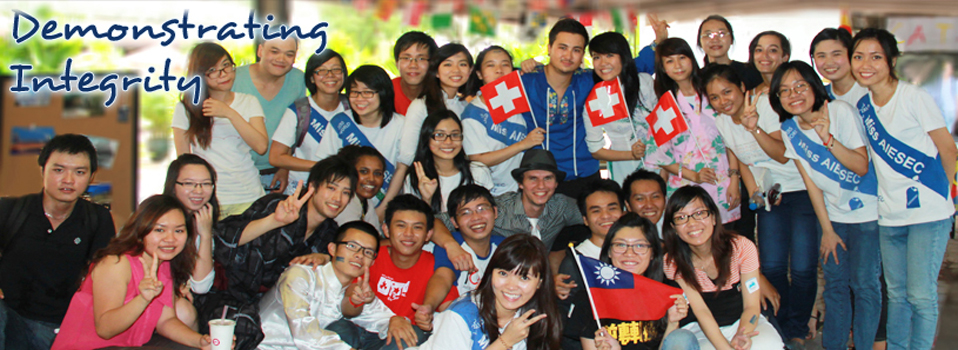

 



Global Community Development Program (GCDP)
Volunteering Abroad or The Global Community Development Programme (GCDP) encourages cross-cultural positive impact and personal development of participants through working abroad for social and community development projects and issues. A GCDP is an internship that is hosted by an AIESEC entity under a project or a non-AIESEC organization e.g. NGO, organizations or schools in another country. We want the intern to be interested in cross-cultural understanding, personal development and the opportunity to contribute to social change.
Benefits for participants of GCDP:
- Cross-cultural experience;
- Self-development and skill enhancement by undertaking the program;
- Participation in the most cultural learning experience AIESEC offers;
- Increasing the social responsibility by participating in projects based on global issues.
Details and logistics
- Duration: 6-8 weeks;
- No salary provided;
- Accommodation and food provided;
- Flight ticket, visa, insurance and additional living costs are not covered;
- Contract fee:
Who are we looking for
- Students and recent graduates (up to 2 years after) under 30 years of age;
- Understanding the value of internship: cross-cultural positive impact and personal development;
- Goes through the selection process conducted by AIESEC;
- Fluent English;
- Willing to take other AIESEC programs (Preferred).
What I will do
This is a great opportunity to take time off between studies and explore the world while helping other countries grow and develop by sharing your knowledge. With the GCDP internship you can take part in short term projects based on the most popular Global issues such as:
- Cultural Understanding:
Want to know why Japanese bow instead of shaking hands? Share your cultural awareness and understanding with people worldwide. Run trainings, organize global villages, show your unique culture and explore others. - Social Development:
Help others. Lend a helping hand in countries, where men and women are not equally treated, where children are cut off from their childhood or where disabled people are hidden from the society. Be part of an NGO or an AIESEC project and make the difference in alerting social issues. - Education:
Play your part in education for the betterment of tomorrow! Design and execute learning programs for educational institutions and universities all around the world. Help youth from all over the world to exlore IT-literacy, financial literacy, entrepreneurship etc. - HIV/AIDS:
Be part of project by increasing HIV/AIDS awareness in countries that are battling with the spread of the virus. Organize and conduct learning events and campaigns in African countries, Asia, etc. Share your ideas with people from other countries! - Environmental Sustainability:
Help raising environmental awareness. Be part of projects, organize environmental campaigns and activities in countries all over the world!